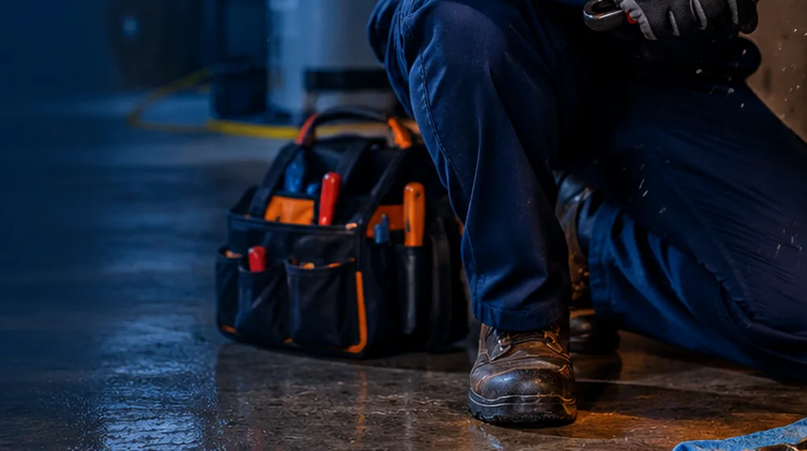
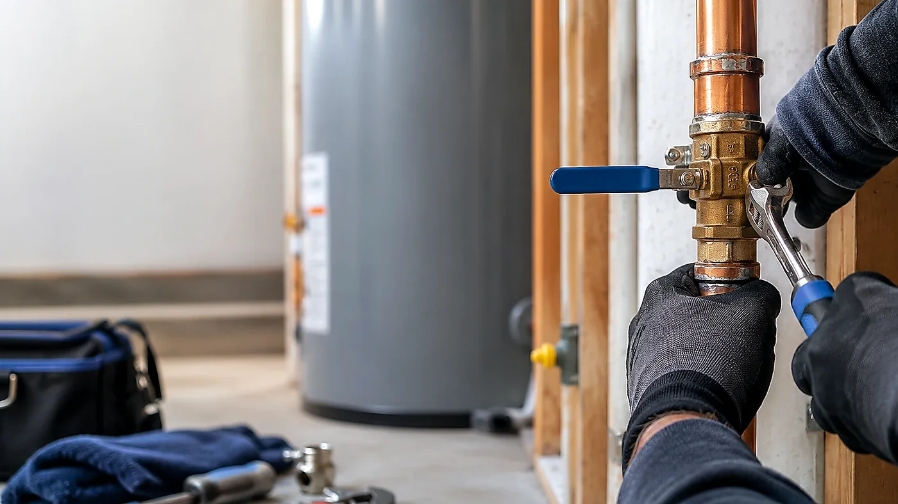

Water Damage Cleanup Guidance: What to Do After a Plumbing Leak
Water damage cleanup guidance for Buffalo Grove homeowners: stop the water, dry fast, check for mold and know when to call a pro.
Read article →Plain-language resources to help you prepare for plumbing problems and ask informed questions.

Water damage cleanup guidance for Buffalo Grove homeowners: stop the water, dry fast, check for mold and know when to call a pro.
Read article →
A burst pipe can be stressful. These practical first steps can help you protect people and reduce additional water damage while arranging professional assistance.
Read article →
Slab leaks can be difficult to identify because supply or drain lines may run beneath a concrete floor. These signs can have other causes, so inspection matters.
Read article →
Knowing where the main water shutoff is before an emergency can save time. Valve locations vary by home and plumbing layout.
Read article →
Cold weather can put exposed or poorly insulated plumbing at risk. Prevention depends on the property and the severity of the weather.
Read article →
Not every leak begins with a dramatic spray. Regularly checking visible plumbing can help identify some problems earlier.
Read article →Stopping the leak is only the first step. Materials may remain wet after the visible water is gone.
Read article →
Repair versus replacement depends on the condition and material of the pipe, how accessible it is, and whether problems are recurring.
Read article →Clear questions make it easier to compare proposals and understand the work before it begins.
Read article →Share the type of issue and your area. Ask about provider availability, credentials, and pricing before authorizing work.